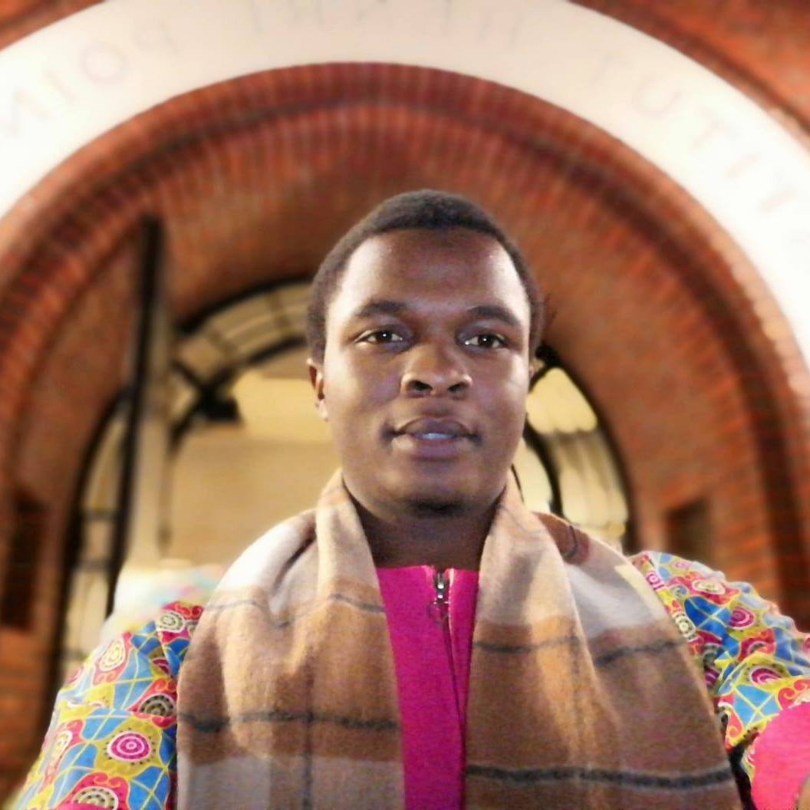

My thesis was supervised by Sylvie Méléard, Carl Graham and Jérôme Harmand. It was about developing mathematical models for a better comprehension of bacterial metabolic heterogeneity (see PhD THESIS).
Probability, statistics and their applications in life-sciences (see M2PSAV).
I did this Master in Mathematical analysis after a licence in Mathematics and Computer-Science in the same university.